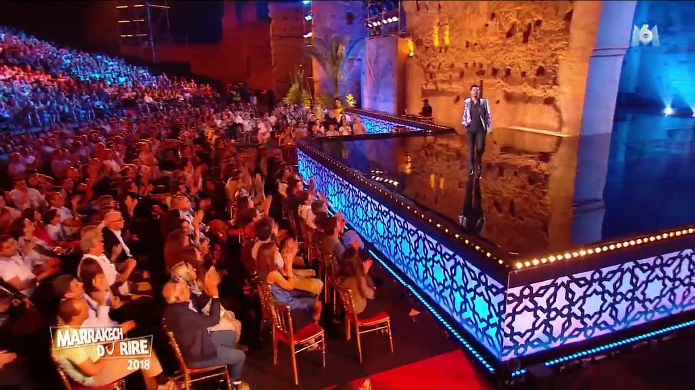
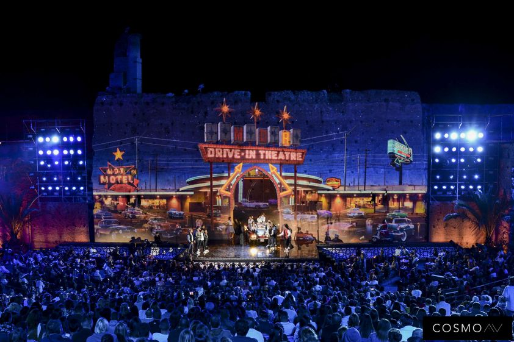
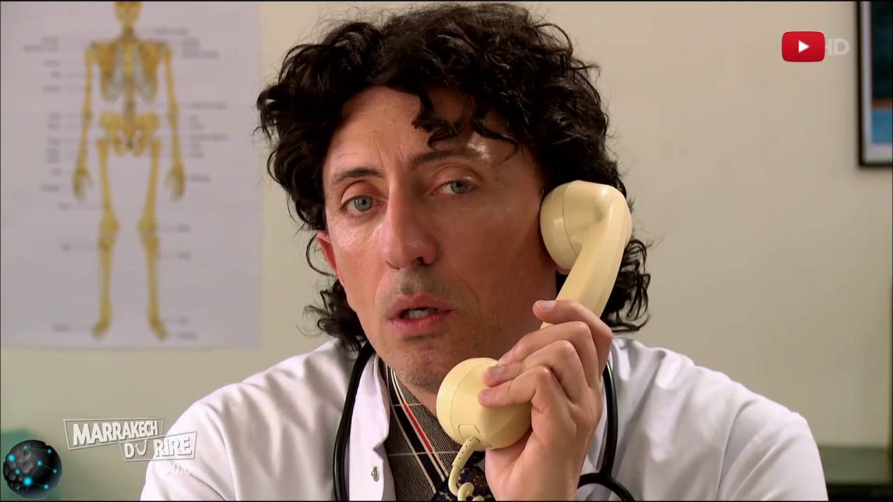
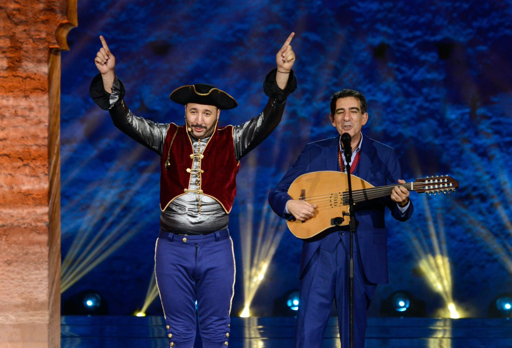
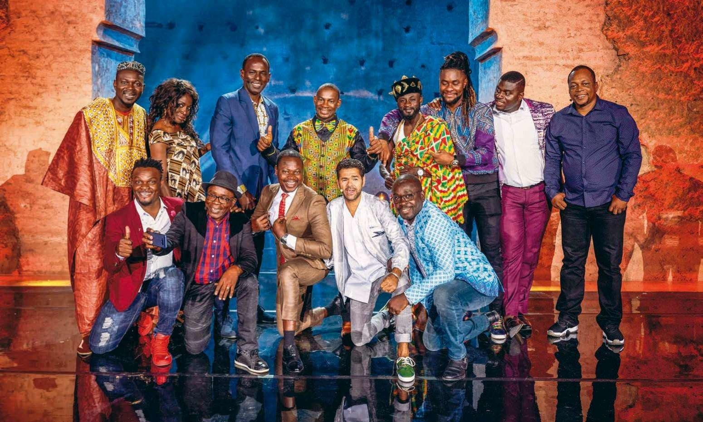

MARRAKECH DE RIRE
|
Le Festival le Marrakech du rire est un festival international d’humour initié par Jamel Debbouze. Chaque année depuis 2011, date de création du festival, le Maroc reçoit les stars internationales de l’humour et de nombreux artistes durant 5 jours. Ce festival utilise le canal du rire pour être une véritable plateforme de rencontre culturelle. Il est composé de plusieurs ateliers, spectacles en salle ou dans la rue avec artistes de cirque, des musiciens et des comédiens. La ville de Marrakech vit au rythme de l’humour pendant le festival. |
 | |
|  |
La grande scène du gala du rire : Le gala du Marrakech du rire est le spectacle final qui accueille de nombreux spectateurs dans le sublime espace du palais El Badi. Le spectacle est filmé pour ensuite être diffusé à la télévision. Jamel Debbouze, maître de cérémonie du spectacle, présente les différents artistes qui viennent prester. Ce sont des sketches inédits et plusieurs surprises qui ponctuent la soirée ; sans oublier les prestigieux invités qui sont présents dans la salle. Le gala a vu passé des artistes qu’on ne présente plus comme : Gad Elmaleh, Michael Youn, Kev Adams, Audrey Lamy, Anthony Kavanagh, Kamel le Magicien, Franck Dubosc, Jeff Panacloc, Kad Merad, Patrick Timsit, Caroline Vigneaux, Max Boublil et des dizaines d’autres. |
|
|
Jamel Debouze : Les jeunes talents mis en avant pendant le festival Le festival réserve un espace, dénommé « la scène internationale des jeunes talents », aux jeunes humoristes locaux et étrangers. C’est une scène où des artistes débutants repérés dans les plus grands festivals francophones viendront concourir. Le spectacle se déroule en deux parties. La première est animée par 6 jeunes humoristes marocains qui sont en compétition pour le prix du jeune humoriste marocain de l’année. La deuxième partie est celle des humoristes internationaux issus des festivals partenaires que sont « Grand Rire » au Québec, « Le Voo Rire Festival » à Liège en Belgique, « Morges sous Rire » en Suisse et la « DebJam Comedy » du Comedy Club pour la France. Les gagnants sont assurés de revenir l’année suivante pour présenter leurs spectacles solos qui seront programmés au Marrakech du Rire. |
 | |
|  |
Les différents spectacles solos : Les spectacles solos du Marrakech du rire font partie des festivités. Les humoristes de renom comme Florence Foresti, Omar et Fred, Malik Bentalha ou Jamel Debouzze lui-même présentent chacun leur spectacle solo au public. L’édition de 2015 a présenté entre autres les spectacles de Nawell Madani, Elie Semoun et Hamza Filali. Des cours de théâtre uniques lors de la masterclass Durant le festival une séquence appelée la « masterclass du rire » est dirigée par Oscar Sisto. Ce cours est organisé avec l’appui de l’Institut Français et du Studio des Arts Vivants. L’objectif est de contribuer à l’émergence de la scène humoristique marocaine. Quelques mois avant le festival des ateliers permettent aux nouveaux talents de découvrir et d’améliorer leurs techniques d’écriture, de composition d’un spectacle et d’interprétation. |
|
|
La rue en fête pendant le festival : Les rues de Marrakech sont animées, chaque année lors du festival, de nombreux spectacles hors du commun avec des marionnettes géantes, des acrobaties, des parades, des expositions et des diffusions de films dans les places publiques. C’est un festival très attendu par la population et très apprécié des visiteurs qui viennent pour l’occasion. Le spectacle de rue a pu voir le jour grâce à la collaboration entre Khalid Tamer, directeur artistique du Collectif Éclats de Lune et du Festival Awaln’Art, et Jamel Debbouze. Cette rencontre rend accessible le spectacle au plus grand public. Le cirque contemporain marocain et étranger y trouve une grande place. C’est un espace professionnel d’expression pour tous ces artistes. |
 | |